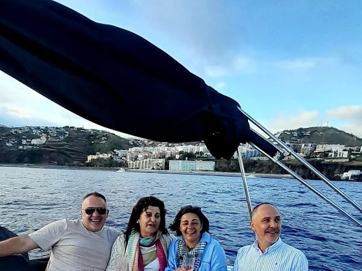
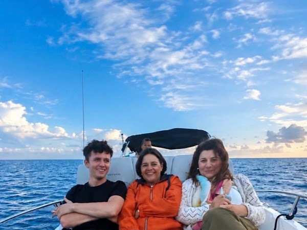
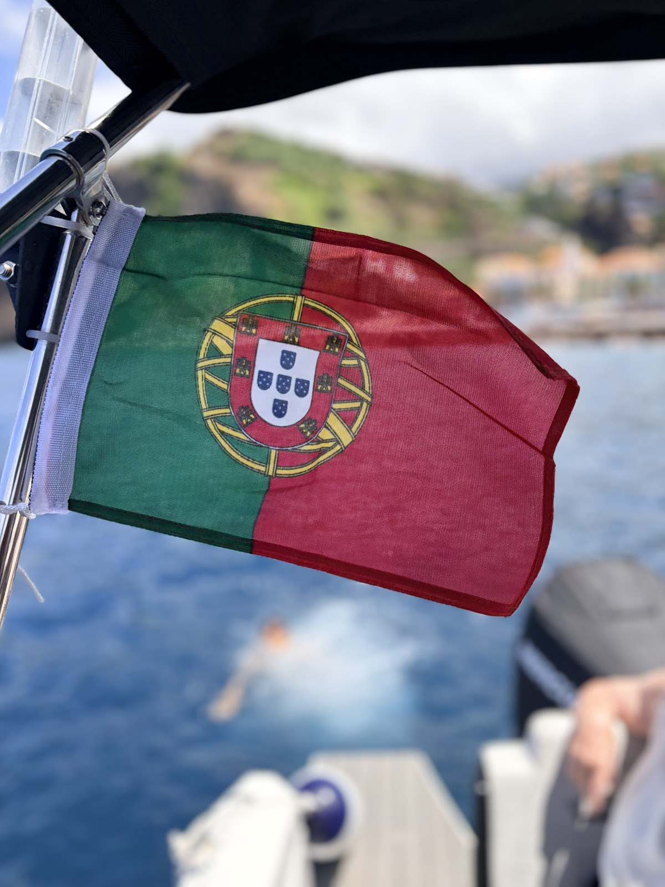
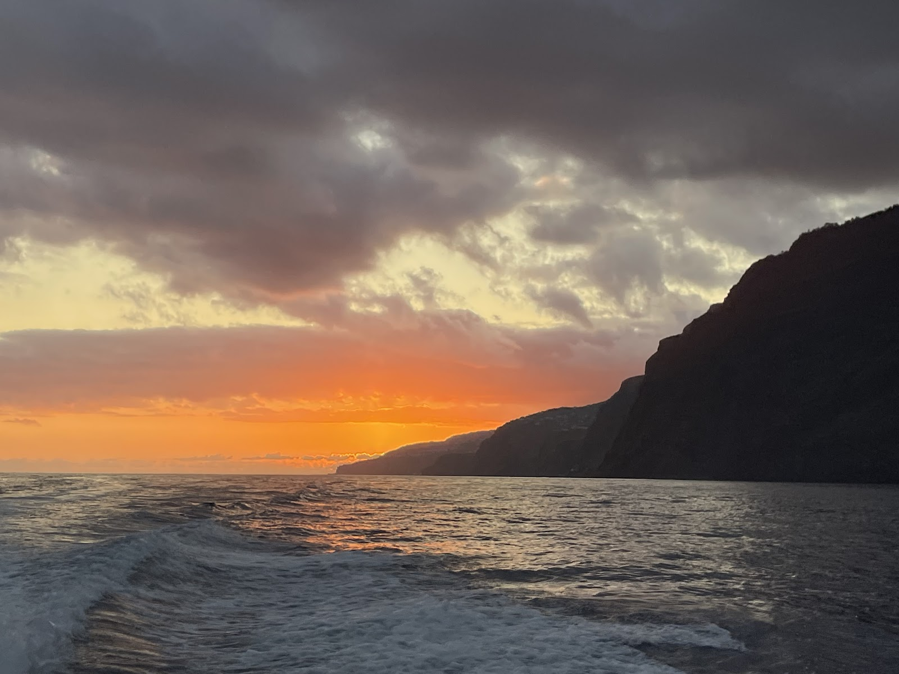
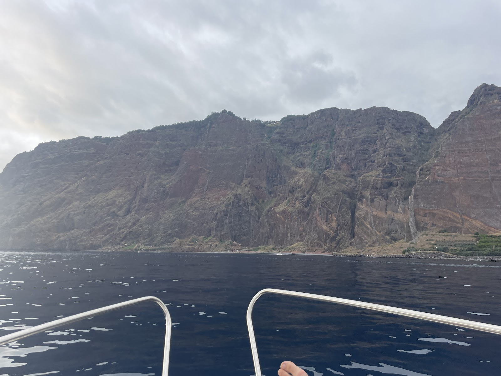
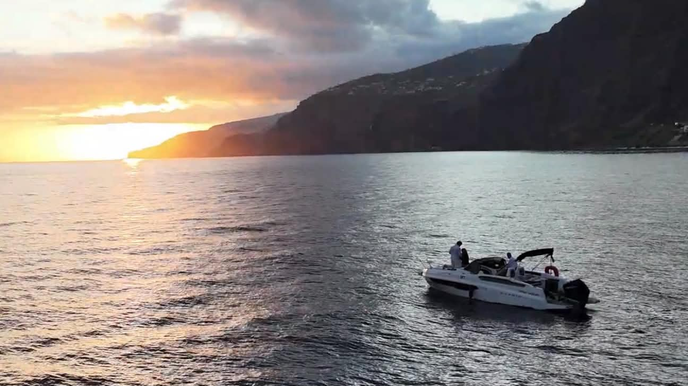
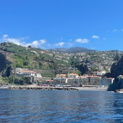
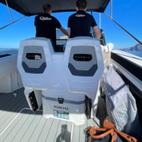
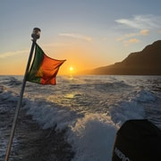

★★★★★
“A spectacular experience along the island's coast. Very attentive and helpful staff. There was never a shortage of drinks and good cheer. I highly recommend this boat trip.”
Every review on this page was written by a verified Chifbay guest on GetYourGuide or Google — reproduced word for word, with nothing added and nothing removed.
“A spectacular experience along the island's coast. Very attentive and helpful staff. There was never a shortage of drinks and good cheer. I highly recommend this boat trip.”
“An experience to repeat, it was fantastic, without a doubt I recommend it for a pleasant, relaxed moment in the best company.”

“Wonderful. It was unforgettable! Very friendly and attentive staff. I recommend it!”

“Fantastic 3 hour trip with Chifbay! Immaculate boat, amazing service & one of the best guacamoles i’ve tasted made fresh on board by our skipper! Nothing was too much trouble and my mother, son and husband all enjoyed our trip! We had flexibility on swimming for as long or as little as we wanted. Use of a paddleboard and even drone footage provided! A superb professional well organised experienced. Highly recommend!”

“Une expérience absolument magique, que je recommande les yeux fermés ! Tout était parfait du début à la fin. Les guides français, un père et son fils, étaient extrêmement sympathiques, professionnels et passionnés. Ils nous ont partagé de nombreuses explications tout au long de la sortie dans une ambiance très conviviale, ce qui a rendu l’expérience encore plus agréable. Le coucher de soleil était tout simplement magnifique. Nous avons également pu nous arrêter pour nous baigner, faire du paddle et profiter d’un délicieux apéritif avec boissons incluses. Le plus beau souvenir reste la magnifique vidéo réalisée avec un drone, offerte à la fin de l’excursion. Les images sont superbes et nous permettront de revivre ce moment encore longtemps. Une expérience unique, idéale en famille, entre amis ou en couple. Un immense merci pour cette soirée inoubliable ! 😊”


“We chose this sunset boat tour for a very special occasion, as it's where we got engaged. It will definitely remain the highlight of our trip. The boat is beautiful, comfortable, and very well maintained. Our hosts were welcoming, attentive, and truly helped make the experience even more special. They even captured the moment with a drone video, which is such a wonderful keepsake for us. Drinks and a snacks were included, and the guacamole was especially delicious! We highly recommend this experience to anyone looking to enjoy a beautiful sunset in a peaceful and elegant setting. Thank you again for helping make this moment so memorable.”



“We had a fantastic time with Hugo and Paco. They were incredibly helpful and attentive, going above and beyond to ensure we had the best possible experience, from swimming and sunset to drone video and a delicious aperitif. Thanks again, we highly recommend them!”
“It was amazing!!!! Hugo and paco were the best. Every detail was perfect and we had the best time. Top tier service, pest poncha, amazing views and overall just a great time. Highly recommend!”
“We had an absolutely amazing day on the ClifBay boat tour. Everything was perfect, the friendly and professional crew, the delicious snacks and drinks, the relaxing swim stop, and as the highlight of the day we even spotted a whole group of dolphins. Truly magical. The atmosphere on board was wonderful, and you can feel how much the team enjoys what they do. It made the entire experience unforgettable. I would recommend this tour to everyone visiting Madeira. If we could give 6 stars, we definitely would. More than worth it!”


“Great Trip - Hugo and Paco were a great pair, highly recommend to anyone visiting the island.”
“Unsere Ausflug war einfach traumhaft!Sehr zu empfehlen!”

“Sehr empfehlenswert! Vater und Sohn, super hilfsbereit und bemüht einen schönen Aufenthalt auf See zu gewährleisten. Viele Sprachen möglich. Man kann sich die Tour individuell gestalten, man erhält viele Informationen wenn man das möchte. Super war die frische Zubereitung der Getränke und Snacks vor Ort, sehr lecker. Rund um eine super Tour, vielen lieben Dank.”


Reviews are imported automatically from GetYourGuide and Google as they come in (Tripadvisor is checked by hand — their site blocks automated scraping). Nothing here is edited or reworded.
Your words help other travellers trust a small independent crew over the big operators — and we read every single one aboard.